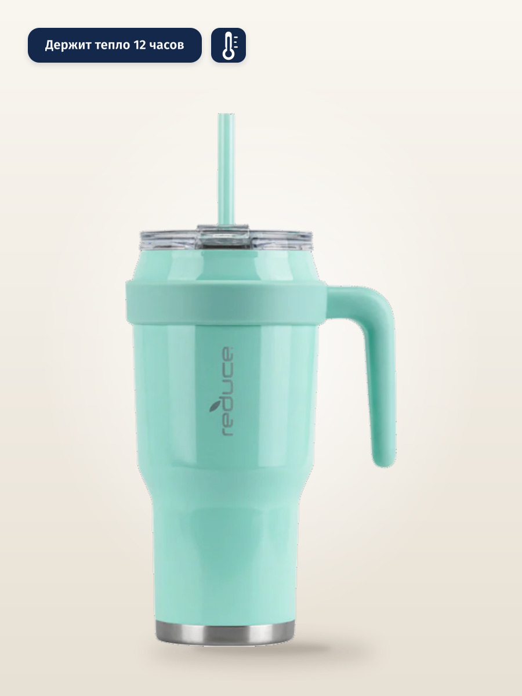

Фрейм 900 × 1200 px: фото, векторная плашка с текстом и иконка термометра. Экспорт в JPG, PNG и SVG.

Фотография термокружки обрезана, фон удалён, яркость и контраст слегка скорректированы. Под кружкой — мягкая тень.
Плашка 300 × 60 со скруглением 20 и текст «Держит тепло 12 часов». Иконка термометра собрана из простых фигур и стоит в тёмно-синей плитке.
Фотография содержит сложные непрерывные переходы цвета, блики и текстуру, поэтому её описывают миллионами пикселей — это растровое изображение. Плашка и иконка состоят из простых геометрических форм, которые задаются математическими путями; SVG хранит их как команды и позволяет масштабировать без потери чёткости.
Основное содержимое карточки — фотография с плавными градиентами. JPG хорошо сжимает такие изображения и даёт небольшой вес: 67,6 КБ против 186,8 КБ у PNG. Прозрачность здесь не нужна, а JPG поддерживается всеми маркетплейсами.